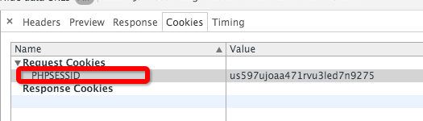
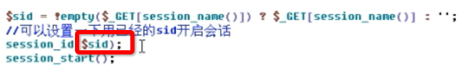
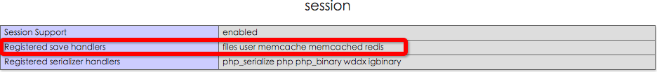
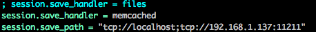
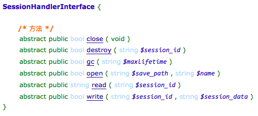

session的使用
1.开启session会话
//函数之前不能有任何输出。
session_start();
每一次请求都需要开启。
该函数先判断是否已经有sessionId，若有，直接用sessionId开启会话。
若无，则将一个sessionID存储到本地cookie，
（//当客户端关闭cookie时，可在url中传递session_id的。）
并在服务器端建立了一个session文件
然后$_SESSION这个数组就可以获取和设置值了。

2.销毁session
session_destroy();//函数消除了服务器端的session文件
session_name();可以获取sessionID在客户端的名字
setCookie(session_name(),””,time()-3600,”/“);//从根目录开始，删除cookie中的session_id
其他函数：
session_id()：获取sessionId
当在session_start函数之前，使用session_id($sid)时，即指定sessionID开启会话。

客户端关闭cookie的时候：
在使用Linux系统做服务器时，
在安装PHP时，如果使用了—enable-trans-sid配置选项，
和运行时php.ini选项session.use_trans_sid都被激活，
则在客户端禁用cookie时，相对的url将被自动修改为包含sessionid，
若没有配置，或使用windows系统作为服务器时，可以使用常量SID。
会话开始之后，可以使用SID常量。 如果客户端未提供会话 cookie，该常量的展开形式为session_name=session_id
反之，当客户端开启cookie时，该常量为空字符串。因此，可以直接在 URL 中包含此常量的展开字符串而无需考虑会话 ID 的实际传送方式。
<a href="nextpage.php?<?php echo htmlspecialchars(SID);?>//使用hemlspecialchars函数是为了防止XSS攻击
session的配置选项
session.auto_start：自动开启session。不推荐使用：因为一些类的初始化设置需要在session开启之前完成。此时，对象无法通过session进行传递。
session.cookie_path：session_id在客户端存储的位置信息
session.save_path：session文件在服务器的存储位置
session.cookie_lifetime：sessionId的cookie在客户端的生存时间。设置为0时，客户端关闭则自动失效。
session垃圾回收：
session.gc_probability = 1
session.gc_divisor = 1000
上面两个设置回收频率：即每次session访问，有1/1000概率启动垃圾回收机制。
session.gc_maxlifetime = 60//回收机制时，60s内未修改(即未访问$_SESSION)的session文件会被删除。
自定义session的存储：
默认用文件存储的方式：session.save_path配置路径。
可以使用：共享文件系统，数据库，缓存(MC、Redis)等

files：文件系统。
user：表示用户自定义的方式。
memcached的方式：
在php.ini里面修改配置即可。如下，修改成memcached的方式：

-
user自定义方式：
注册处理函数，在session_start()之前。
session_set_save_handler函数：设置用户自定义会话存储函数
-
法1：
session_set_save_handler(open,close,read,write,destroy,gc)：参数是函数名
（生命周期）
打开($path,$name)：session_start()函数调用时触发
关闭($sid)：请求结束的时候调用
读取($sid)：$_SESSION[‘username']
写入($sid,$data)：$_SESSION[‘username’]=‘abc'
销毁($sid)：session_destroy()函数调用时触发
回收($maxlifetime)：垃圾回收时触发,maxlifetime即配置的session.gc_maxlifetime
-
法2：
若是对象，则注册时，每个方法是个数组array($object,$func_name)
-
法3：
若是静态方法，则注册时，每个方法是数组array(class_name,func_name);
-
法4：
session_set_save_handler(session_handler,register_shutdown);
session_handler:实现了接口SessionHandlerInterface接口的对象，例如SessionHandler
register_shutdown:bool,是否将函数session_write_close()注册为register_shutdown_function函数

-
应用：
用数据库存储(建议使用内存表)：
id,session_id(官方生成的唯一标识),up_time,session_data,[ip,user_agent浏览器]
每次调用session都会触发write等函数，所以需要做好相应的判断。
如write函数，当数据未修改(注意update_time，防止垃圾回收)
如read函数，需要判断：1.无会话，2.超出时间。3.用户换了IP或者浏览器